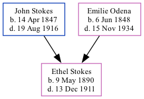

Ethel Ann Stokes 1890 - 1911
[ Home ] | [ Calendar ] | [ Surnames Index ] | [ Family History ]The child of John Stokes (a virginia philips told me that he owned a big grocery store and later a vinegar works; his last business was stokes marble company) and Emilie Odena, Ethel Stokes, the great-great-aunt of Michele Copp (née Phillips), was born in Georgia on May 9, 18901,2,3.
Throughout her life, she lived in Black Hall, Fulton, Georgia in 19001; and in Atlanta Ward 7, Fulton, Georgia in 19102.
She died on Dec 13, 1911 at 600 Gordon Street, Atlanta3 (after a 3 week illness - died at home) and was buried in Atlanta, Fulton County, Georgia, USA after Dec 13, 19113.
Parents
- John Wesley was born on Apr 14, 1847
- Emilie Mae was born on Jun 6, 1848
Citations
- 1900 United States Federal Census Online publication - Provo, UT, USA: MyFamily.com, Inc., 2004.Original data - United States of America, Bureau of the Census. Twelfth Census of the United States, 1900. Washington, D.C.: National Archives and Records Administration, 1900. T623, 1854 rolls.
- 1910 United States Federal Census Online publication - Provo, UT, USA: The Generations Network, Inc., 2006. For details on the contents of the film numbers, visit the following NARA web page: NARA.Original data - United States of America, Bureau of the Census. Thirteenth Census of the Unit
- U.S., Find A Grave Index, 1600s-Current Ancestry.com Operations, Inc.
Family Tree
Generated by ged2site. Last updated on Sep 9, 2024